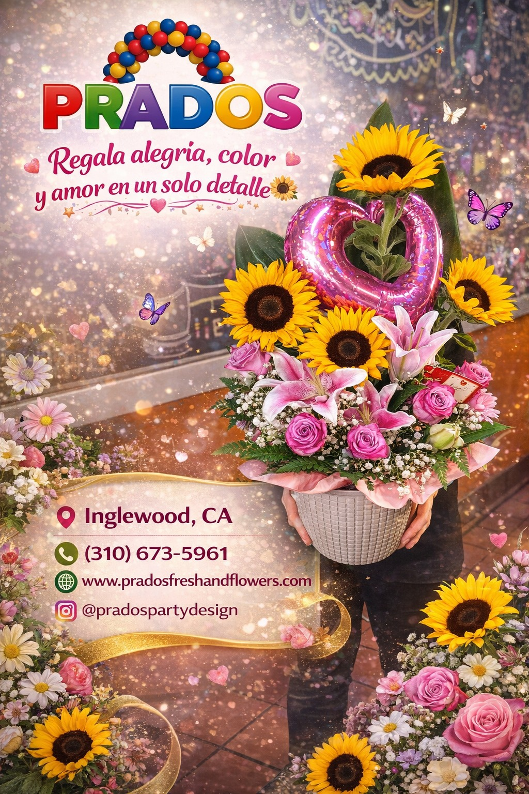
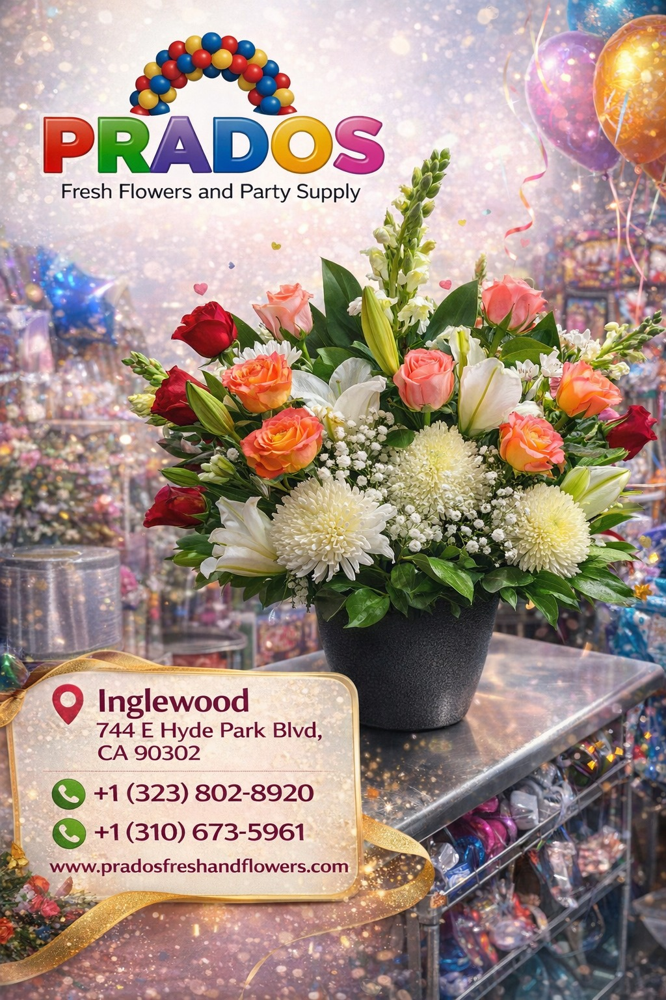
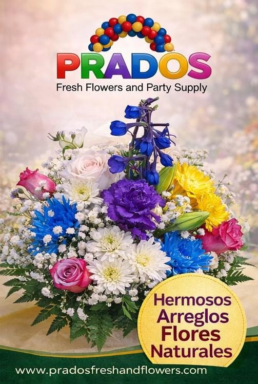
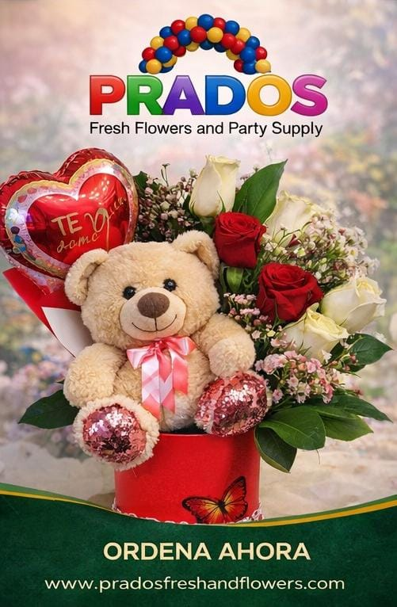

Arreglos Florales y Decoración para Toda Ocasión en Prados Fresh and Flowers
Prados Fresh and Flowers es tu destino ideal en California para encontrar arreglos florales frescos y personalizados que realzan cualquier celebración o momento especial. Con flores de alta calidad, para bodas, aniversarios, graduaciones, cumpleaños y eventos corporativos, cada arreglo floral combina belleza natural, creatividad y elegancia.
Además de nuestros lindos ramos y centros de mesa, Prados Fresh and Flowers te ofrece una experiencia completa para tu evento al tener una amplia selección de party supplies y decoración temática. Desde piñatas, globos, accesorios de fiesta hasta vajilla desechable para cualquier celebración, puedes encontrar todo lo necesario en un solo lugar.
Ya sea que estés planificando una boda romántica, una fiesta de cumpleaños o un evento empresarial, Prados Fresh and Flowers combina flores frescas, diseño creativo y artículos de fiesta para crear ambientes memorables. Visítanos y descubre cómo con nuestra ayuda transformamos tus ideas en una realidad.



Todo lo que Necesitas para tu Fiesta Perfecta con Prados Fresh and Flowers
Prados Fresh and Flowers en California no solo es una florería: es tu aliado para eventos completos, ya que encontrarás flores frescas, decoración y servicios de renta de mobiliario para que tu celebración sea perfecta. Nuestro catálogo incluye arreglos florales para bodas, aniversarios, eventos corporativos y momentos especiales, con opciones personalizadas para cada gusto y estilo.
En Prados Fresh and Flowers contamos con un variado inventario de party supplies que incluye piñatas, globos con helio, decoración temática, manteles, servilletas y más, pensados para cubrir todos los detalles de tus fiestas ya que nos enfocamos también en los pequeños detalles y que todo sea perfecto.
Si lo que buscas es comodidad y estilo, también puedes aprovechar nuestro servicio de renta de mesas y sillas, ideal para bodas, reuniones familiares o eventos al aire libre. En Prados Fresh and Flowers nos importa el cliente así que nos ofrecemos calidad, creatividad y atención personalizada, para hacer que tu evento sea único.

